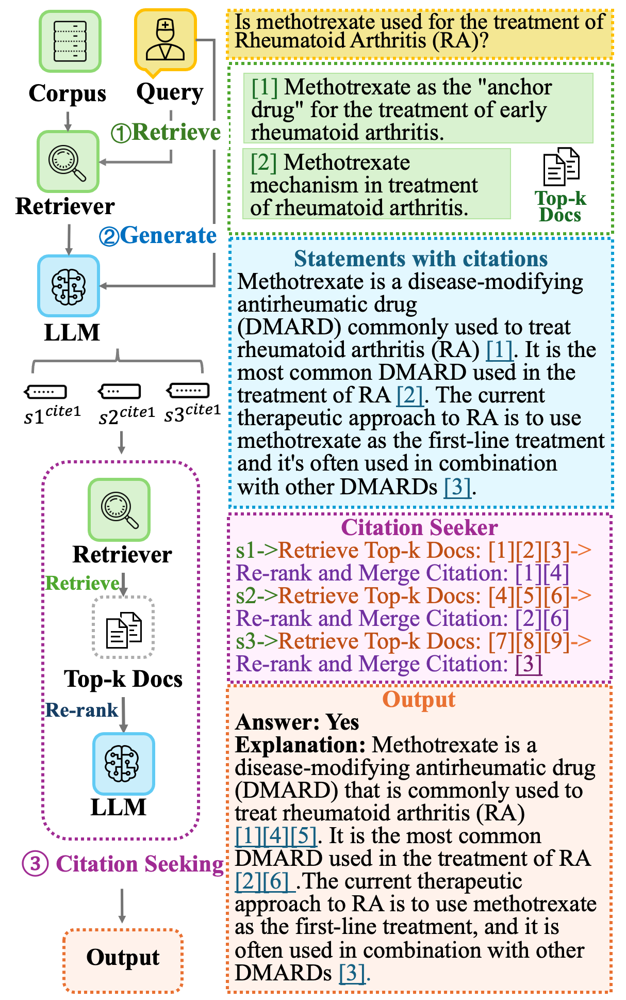
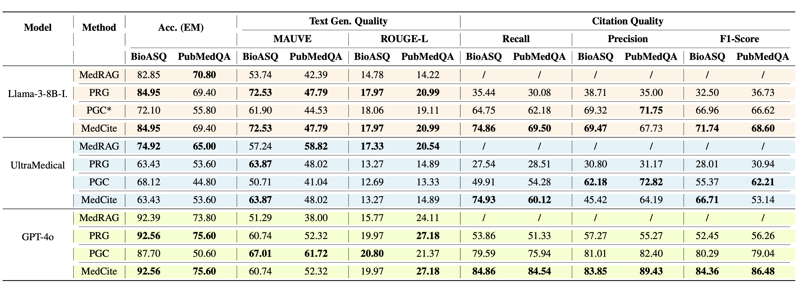

News
- 2025-05-15 MedCite has been accepted by ACL 2025 Findings!
Existing LLM-based medical question-answering systems lack citation generation and evaluation capabilities, raising concerns about their adoption in practice. In this work, we introduce MedCite, the first end-to-end framework that facilitates the design and evaluation of citation generation with LLMs for medical tasks. Meanwhile, we introduce a novel multi-pass retrieval-citation method that generates high-quality citations.
Our evaluation highlights the challenges and opportunities of citation generation for medical tasks, while identifying important design choices that have a significant impact on the final citation quality. Our proposed method achieves superior citation precision and recall improvements compared to strong baseline methods, and we show that evaluation results correlate well with annotation results from professional experts.
MedCite integrates multiple design choices for citation generation in medical question answering. The system combines non-parametric citation, retrieval-augmented generation (RAG), and retrieval with LLM-based reranking.
To fully leverage both the LLM's internal knowledge and external retrieval capabilities, MedCite adopts a multi-pass design. The model first generates an initial answer while assigning preliminary citations based on retrieved documents. It then performs a second retrieval step for each statement, identifying additional supporting documents. After deduplication, citations from both stages are merged to ensure comprehensive evidence coverage. This hybrid approach combines the strengths of generation and retrieval, improving citation precision and recall while maintaining answer correctness.
Accurate citation requires both high recall and factual precision. MedCite implements a hierarchical retrieval strategy where BM25 is first used to retrieve keyword-matching candidates, followed by semantic reranking with MedCPT to prioritize factually relevant documents. This two-stage design improves the system's ability to locate precise evidence for complex biomedical claims.

We evaluate MedCite against several strong baselines covering both medical-domain and general-domain citation generation methods. Specifically, we compare with:
Experiments are conducted on three models: Llama-3-8B-Instruct, UltraMedical, and the commercial model GPT-4o. The evaluation focuses on both citation accuracy and answer correctness across different model sizes and domains.

Citation information will be available soon after arXiv publication.